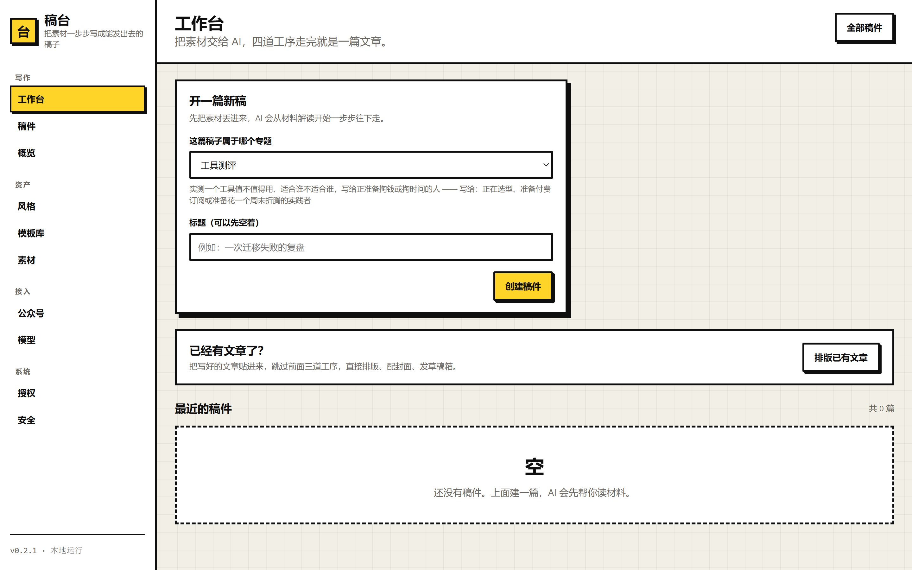

01
四道工序，每道都留下可改的东西
材料解读把长文拆成要点；选题给三个方向并说明为什么；大纲逐段定活儿；正文按大纲写。每一步都产出文件，不满意就回去改，不用从头再来。
四道工序把「一堆材料」推到「一篇成稿」。选题、大纲、正文、排版、配图、推到公众号草稿箱，一条线走完。全部在你的电脑上跑。

材料解读把长文拆成要点；选题给三个方向并说明为什么；大纲逐段定活儿；正文按大纲写。每一步都产出文件，不满意就回去改，不用从头再来。
内置编辑规则、长文方法、通用中文写作三套技能。它们不是提示词模板，是可按需读取的写作档案——模型自己决定读哪一份，而不是把所有规则一次塞进去。
排版包一键套用，配图自动换成微信地址，封面、摘要、原文链接填好后直接推进公众号草稿箱。
贴进采访稿、报告、聊天记录，先让它把材料读成要点和可用的事实
给三个可写的角度，各自说明写给谁、靠什么立住、哪里可能站不住
逐段定：这段推进什么、用哪些素材、写成什么形式
照大纲写，写完可以查 AI 味、套排版、配图、推草稿箱
31 套内置排版包，选中一套右侧立刻出手机预览；想改就复制一份，改颜色、改部件，改完存成自己的模板。内置的只读，你的永远是你的。
条形排名、占比方块、时间线、前后对比、步骤流程、关键数字。给它数据它出图；也可以让它通读全文，自己决定配几张、配在哪、配什么类型——没有真数字时它不会硬造。
稿件、素材、数据库、密钥都写在你的用户目录里，不上传任何服务器。发给你的安装包里也不含技能包和提示词——那些在激活后由服务器加密下发。
支持 DeepSeek 兼容接口。填自己的 Key，按自己的额度用，稿台不代理、不抽成、不看你写了什么。
关注公众号「马哥AI落地」，发「稿台」，会回你一个注册码。一码一机，30 天自动续期，断网也能用。授权只验证「有没有码」，不读稿件内容。